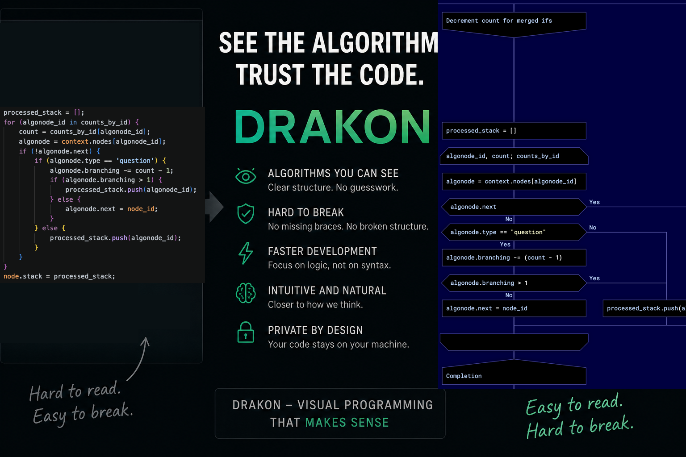

Почему хорошо программировать на ДРАКОНе

Если меня разбудят среди ночи и спросят: «Почему ты программируешь на ДРАКОНе?», я выдам известный формальный ответ.
ДРАКОН сочетает в себе строгость и единообразие, с одной стороны, а с другой — дракон-схемы легко читаются. Язык ДРАКОН имеет объективные свойства, которые облегчают восприятие алгоритмов: запрет на пересечение линий, предсказуемость, а кроме того, все дракон-схемы в чём-то похожи.
Это всё, конечно, правда. Но ДРАКОН — это нечто большее, чем набор сухих правил: размер квадратиков, выравнивание графических элементов и т. п.
Моя встреча с ДРАКОНом произошла следующим образом.
В далёком 2003 году мне повезло работать вместе с одним высокопрофессиональным программистом. Назовём его К. К. — не просто талантливый разработчик, он, в общем-то, гений.
К. показывал мне и объяснял современное программирование. Однажды он сказал:
«Проблема современных языков программирования в том, что они слишком текстовые. Программа — сущность, в которой много измерений. Поэтому для программирования необходимо графическое представление программ».
Вначале я пропустил это мимо ушей, но постепенно до меня начал доходить смысл сказанного.
Я, конечно, не мог видеть программы так глубоко, как он, но тоже начал замечать некоторые несуразности стандартного текстового представления программного кода.
Возьмём, например, выражение если.
Пока программа коротенькая и выражение если одно, проблем нет.
Но если ветвление происходит в несколько шагов, дело дрянь. Несколько вложенных конструкций если подчёркиваются глубиной отступов. Отступы, кстати, — графический элемент. Но это примитивный графический элемент. Он заставляет читателя программы вычислять, где находится следующий шаг после того, как мы углубились далеко во вложенные выражения если.
Проблему поиска следующего шага решают блок-схемы. На блок-схеме можно по стрелочке перейти к следующему квадратику. Но есть одна трудность: трудно нарисовать блок-схему, которую поймёт кто-то ещё. Каждая блок-схема — уникальное произведение искусства. Их место в музее, а не в исходном коде.
Если говорить техническим языком, то в блок-схемах не хватает формальности и единообразия. А вот в стандартном текстовом представлении программ единообразие есть. Единообразие важнее красоты.
Я почти отчаялся. Перестал думать о графическом программировании и начал изучать другие парадигмы, например логическое и функциональное программирование.
Шёл 2011 год.
Я припомнил, что когда-то читал о советском космическом языке программирования. Я полазил в интернете и нашёл язык ДРАКОН.
Я перешёл по ссылке и прочитал статью В. Паронджанова об основах этого визуального языка. Я ещё не дочитал статью до конца и уже понял: это оно. Это то, что я так долго искал! Я испытал прилив сил и счастья.
Я загорелся идеей создать свой собственный дракон-редактор. К счастью, на меня обратил внимание сам Владимир Паронджанов, создатель языка ДРАКОН.
Он начал оказывать мне всяческую поддержку.
Он научил меня тонкостям языка ДРАКОН, а ещё научил меня, как правильно сделать дракон-редактор.
Так появились ДраконТех, ДраконВиджет и основанные на них программы.
Как только я смог запустить собственный редактор и генератор кода, я начал программировать на ДРАКОНе.
В программировании на ДРАКОНе я не вижу ничего особенного или необычного. Наоборот, это дело естественное и интуитивное. Другое дело, что когда мне приходится программировать традиционным образом, то есть текстом, я чувствую неудобство. Как будто я ехал на машине, а теперь меня заставляют ходить пешком.
Это скорее эмоция, чем логика.
Текстовая программа ощущается как несколько бумажных пароходиков, сдавленных между страницами книги. Хочется вытащить эти пароходики, расправить их и аккуратно расставить по столу. Это именно то, что ДРАКОН делает с алгоритмами — распутывает их и аккуратно раскладывает.
Мне приходилось слышать и другие отзывы о программировании на ДРАКОНе.
Так, один электронщик рассказывал о том, что дракон-схемы помогают ему находить ошибки в программах совершенно необычным способом. Он просто смотрел на схемы, и к нему внезапно приходило знание о том, что в данном месте находится ошибка.
Другой разработчик объяснил свою любовь к ДРАКОНу так. Когда пишешь текстовую программу, это похоже на школьное сочинение. Скучно получается. А когда переходишь на ДРАКОН, программирование больше похоже на компьютерную игру. Не программу пишешь, а строишь свой виртуальный мир. Как Minecraft, только со смыслом.
А вот ещё одно мнение.
В фантастических фильмах нам иногда показывают корабли инопланетян изнутри. Чужие обычно управляют своим кораблём при помощи мегакомпьютеров со стильной визуализацией. Так вот, ДРАКОН — это и есть такая стильная визуализация инопланетян, особенно когда выбираешь тему с тёмным фоном.
В последние годы появились неплохие нейронные сети, и программирование изменилось. Теперь не нужно вручную писать код. Достаточно сказать человеческим голосом:
«А ну-ка сгенерируй мне компилятор C++ для платформы ARM».
Нейросеть подумает секунд 10–15 и выдаст готовый к употреблению компилятор.
Конечно, не всё так просто, но в целом мы движемся в этом направлении. Казалось бы, что ещё надо? Сердце может радоваться и веселиться.
Проблемы начинаются, когда нужно написать что-нибудь интересное и нетривиальное. Что-нибудь, чего не было раньше. Вайб-диалоги с искусственным интеллектом перерастают в спор. Вайб-кодеру приходится искать остроумные способы, чтобы заставить механический сверхинтеллект сделать то, что нужно. Постепенно декларативное пожелание типа «сделаем всем хорошо» превращается в псевдокод вида:
X = A + BКонечно, даже тогда преимущества применения искусственного интеллекта очевидны. Он находит логические ляпы и генерирует исходный код со всеми формальностями: отступами, точками с запятыми и скобками.
В принципе, никто не против искусственного интеллекта даже и в таком режиме, если бы не известные проблемы.
Во-первых, это долго. Иногда ответа от нейронной сети можно ждать десятки секунд.
Во-вторых, недетерминированность. На один и тот же промпт электронный интеллектуал утром выдаст один код, а вечером другой. В утреннем будут одни ошибки, а в вечернем другие.
Кроме того, необходимо постоянное подключение к интернету. И оно должно быть не только у вас, но и у товарища Клода. А вдруг обрыв на линии?
И ещё одна неприятность: в некоторых странах искусственный интеллект дорого стоит.
Унылая картина. Но, к счастью, есть ДРАКОН.
ДРАКОН — это что-то среднее между полностью ручным и полностью автоматическим программированием. Конечно, ДРАКОН находится ближе к ручной части этого спектра. Нейросеть может гораздо больше, чем любой, даже самый лучший дракон-генератор.
Тем не менее генератор кода из дракон-схем отлично справляется с наиболее утомительной и скучной частью программирования:
- отступами;
- скобками;
- формированием общей структуры файла с исходным кодом.
Отступы и скобки нужно не только правильно написать в первый раз, их ещё нужно поддерживать в непротиворечивом состоянии каждый раз, когда вы что-то дописываете, удаляете, копируете или вставляете.
Дракон-редактор заботится обо всём этом автоматически. Как нейросеть, но только быстро и надёжно:
- Дракон-редактор вписывает нужные ключевые слова.
- Вам не нужно следить за вложенностью.
- Невозможно сломать структуру программы при копировании и вставке.
Кроме того, вы лишаете разработчиков больших языковых моделей возможности посмеяться над вашим кодом. Ваш код остаётся на вашей машине.
Так что можно сказать и так:
ДРАКОН — это быстрый и жёсткий вайб-кодинг без кондиционера.